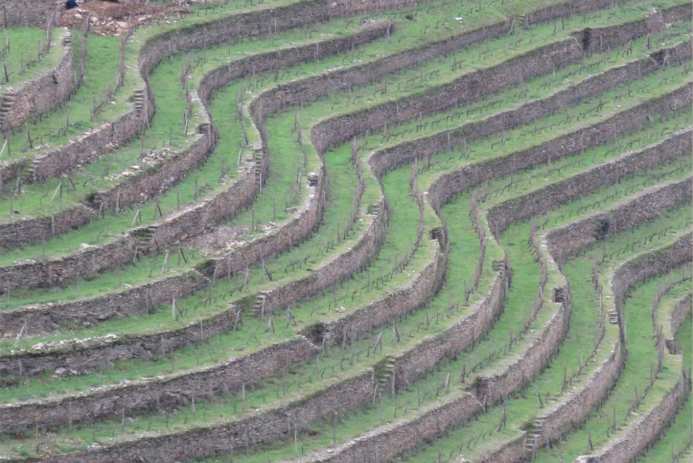
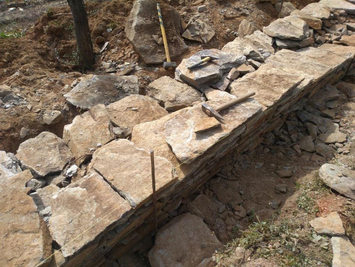

O Portugal Profundo e Genuíno
Longe das rotas do turismo de massa, Portugal conserva tradições milenares ligadas à terra e aos ciclos da nature. Hoje, vamos descobrir a arte da pedra e a energia dos rituais de inverno transmontanos.
Os Muros de Pedra Seca e os Caretos de Podence
Leia com atenção o texto sobre duas grandes tradições portuguesas classificadas pela UNESCO. De seguida, complete as cinco frases escolhendo a continuação correta. Passe o rato pelas imagens pequenas para ilustrar o texto.



Em quase todas as regiões rurais de Portugal, existem paisagens impressionantes moldadas por muros de "pedra seca". Estes muros são construídos de forma artesanal, apenas encaixando as pedras com paciência, sem usar cimento ou argamassa. Eles são fundamentais para dividir os campos, proteger a terra contra a erosão e criar caminhos para os pastores. É um saber transmitido de pais para filhos.
No norte, na pacata aldeia de Podence, acontece uma das tradições mais fascinantes e misteriosas da Europa: os Caretos. Durante o inverno e o Carnaval, os rapazes da aldeia vestem fatos coloridos feitos de lã, usam máscaras de latão ou couro e chocalhos na cintura. Eles correm pelas ruas com muita energia, saltam e entram nas casas das pessoas. É um ritual pagão antigo que celebra o fim do inverno e o renascimento da natureza.


Correspondência com Perspetiva Cultural
Um amigo do Brasil enviou-lhe uma mensagem porque quer conhecer as raízes folclóricas de Portugal. Escreva uma resposta curta (entre 60 a 80 palavras) a falar sobre o mistério dos Caretos ou a beleza dos muros de pedra.
Espaço de Redação
Expressão Oral: A Força da Tradição Viva
A UNESCO protege estas manifestações porque elas mantêm viva a alma de um povo. Grave um pequeno áudio onde partilha a sua opinião sobre o valor destas heranças.
1. Indique qual das duas realidades (a pedra seca ou as máscaras dos Caretos) lhe parece mais impressionante.
2. Explique por que razão considera importante preservar tradições que não dependem da tecnologia.
3. Pode usar expressões como: "Eu acho este ritual muito...", "O trabalho da pedra é bonito porque...", "Na minha opinião, a cultura de um país...", entre outras.